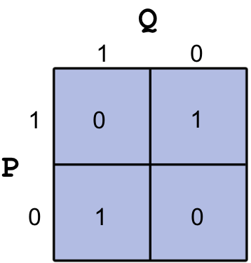

This notebook contains an excerpt from the Python Programming and Numerical Methods - A Guide for Engineers and Scientists, the content is also available at Berkeley Python Numerical Methods.
The copyright of the book belongs to Elsevier. We also have this interactive book online for a better learning experience. The code is released under the MIT license. If you find this content useful, please consider supporting the work on Elsevier or Amazon!
< 1.5 Logical Expressions and Operators | Contents | 2.0 Variables and Basic Data Structures >
Summary¶
You learned the basics of Python to set up the working environment and ways to run Python.
Python can be used as a calculator. It has all the functions and arithmetic operations commonly used with a scientific calculator.
You can manage the Python packages.
You learned how to interact with Jupyter notebook.
You can also use Python to perform logical operations.
You now come across int, float, complex, string, boolean data types in Python.
Problems¶
Print “I love Python” using Python Shell.
Print “I love Python” by typing it into a .py file and run it from command line.
Type import antigravity in the Ipython Shell, it will take you to xkcd and see the awesome Python.
Launch a new Jupyter notebook server in a folder called “excercis” and create a new Python notebook with the name “excercis_1”, then you can do the rest of the problems within this notebook.
Compute the area of a triangle with base 10 and height 12. Recall that the area of a triangle is half the base times the height.
Compute the surface area and volume of a cylinder with radius 5 and height 3.
Compute the slope between the points \((3,4)\) and \((5,9)\). Recall that the slope between points \((x_1,y_1)\) and \((x_2, y_2)\) is \(\frac{y_2 - y_1}{x_2 - x_1}\).
Compute the distance between the points \((3,4)\) and \((5,9)\). Recall that the distance between points in two dimensions is \(\sqrt{(x_2 - x_1)^2 + (y_2 - y_1)^2}\).
Use Python’s factorial function to compute \(6!\)
A year is considered to be 365 days long. However, a more exact figure is 365.24 days. As a consequence, if we held to the standard 365-day year, we would gradually lose that fraction of the day over time, and seasons and other astronomical events would not occur as expected. A leap year is a year that has an extra day, February 29, to keep the timescale on track. Leap years occur on years that are exactly divisible by 4, unless it is exactly divisible by 100, unless it is divisible by 400. For example, the year 2004 is a leap year, the year 1900 is not a leap year, and the year 2000 is a leap year.
Compute the number of leap years between the years 1500 and 2010.A very powerful approximation for \(\pi\) was developed by a brilliant mathematician named Srinivasa Ramanujan. The approximation is the following:
\(\frac{1}{\pi} \approx \frac{2\sqrt{2}}{9801} \sum_{k=0}^{N} \frac{(4k)!(1103 + 26390k)}{(k!)^4 396^{4k}}\).
Use Ramanujan’s formula for \(N = 0\) and \(N = 1\) to approximate \(\pi\). Be sure to use format long. Compare your approximation with Python’s stored value for pi. Hint: \(0! = 1\) by definition.The hyperbolic \(sin\) or \(sinh\) is defined in terms of exponentials as \(sinh(x) = \frac{\exp(x) - \exp(-x)}{2}\).
Compute \(sinh\) for \(x = 2\) using exponentials. Verify that the result is indeed the hyperbolic \(sin\) using Python’s function sinh in the math module.Verify that \(\sin^2(x) + \cos^2(x) = 1\) for \(x = \pi, \frac{\pi}{2}, \frac{\pi}{4}, \frac{\pi}{6}\).
Compute the \(\sin87\)°.
Write a Python statement that generates the following error:
“AttributeError: module ‘math’ has no attribute ‘sni’”
Hint: sni is a misspelling of the function sin.Write a Python statement that generates the following error:
“TypeError: sin() takes exactly one argument (0 given)”
Hint: Input arguments refers to the input of a function (any function); for example, the input in \(sin(pi/2)\) is \(pi/2\).If \(P\) is a logical expression, the law of noncontradiction states that \(P\ AND\ (NOT\ P)\) is always false. Verify this for \(P\) true and \(P\) false.
Let P and Q be logical expressions. De Morgan’s rule states that \(NOT\ (P\ OR\ Q)\ =\ (NOT\ P)\ AND\ (NOT\ Q)\) and \(NOT\ (P\ AND\ Q)\ =\ (NOT\ P)\ OR\ (NOT\ Q)\). Generate the truth tables for each statement to show that De Morgan’s rule is always true.
Under what conditions for \(P\) and \(Q\) is (\(P\ AND\ Q)\ OR\ (P\ AND\ (NOT\ Q)\)) false?
Construct an equivalent logical expression for OR using only AND and NOT.
Construct an equivalent logical expression for AND using only OR and NOT.
The logical operator XOR has the following truth table:
Construct an equivalent logical expression for XOR using only AND, OR, and NOT that has the same truth table (see the following figure)

Do the following calculation at the Python command prompt.
\(e^{2}\sin{\pi/6} + log_e(3)\cos{\pi/9}-5^3\)Do the following logical and comparison operations at the Python command prompt. You may assume that P and Q are logical expressions.
For P = 1 and Q = 1; Compute \(NOT(P)\ AND\ NOT(Q)\).
For a = 10 and b = 25; Compute \((a<b)\ AND\ (a=b)\).
< 1.5 Logical Expressions and Operators | Contents | 2.0 Variables and Basic Data Structures >